채널: 레디포그로스 (Ready For Growth) | 길이: 21:42 | 날짜: 2026-02-04
배드로팅(bed rotting)을 “게으름”이나 “힐링”이 아니라, 과부하된 뇌가 선택한 셧다운/동결 반응으로 재정의한다. 특히 INFP·완벽주의·분석마비 성향을 겨냥해, 자기비난 프레임을 걷어내고 신경생물학 프레임으로 문제를 설명한다.4단계 신경계 리부팅 프로토콜을 제시한다.3일 이상 비활동 시 CRP 증가, 염증-도파민 억제 연결을 제시한다. 숫자(3일, 10시간 수면, 45도, 10분, 5초 카운트다운, 1분 배회)를 반복해 실행 장벽을 낮춘다.마이크로 액션이다. 발가락 3회 움찔, 상체 45도 세우기, 이불 걷어차기, 목적 없는 1분 걷기 같은 초저부담 행동으로 관성을 깨라고 안내한다.배터리 0%, ERROR/FAILURE, CRP 상승, DEAD STATE ↔ SAFE STATE, MICRO ACTION DRILL, DOPAMINE REMODELING 같은 텍스트 아이콘을 반복해 개념을 빠르게 각인시킨다.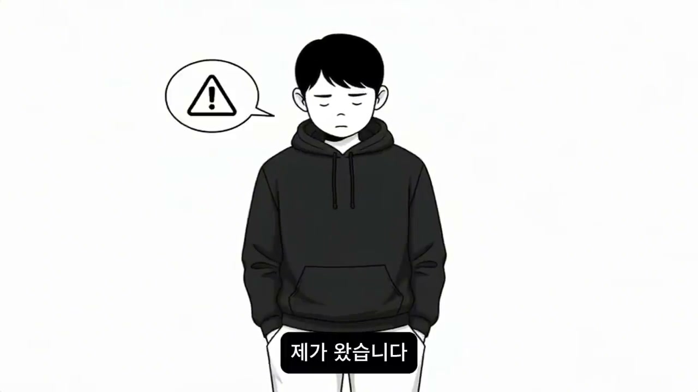
오프닝은 매우 공격적이다. “지금 침대에서 이 영상을 보고 있다면 즉시 상체를 세워라”라고 명령하며, 틱톡/릴스 유행어인 배드로팅 뒤의 위험성을 경고한다. 많은 사람이 이를 “열심히 산 나를 위한 보상”으로 착각하지만, 발화자는 2025년 신경과학·심리학 관점에서는 전혀 다르다고 못 박는다.
핵심 문장은 “이건 휴식이 아니다. 전두엽 기능이 정지되는 인지적 가사 상태에 가깝다.”이다. 화면도 우울한 표정의 캐릭터 옆 경고 아이콘으로 위험 경보 톤을 강화한다.
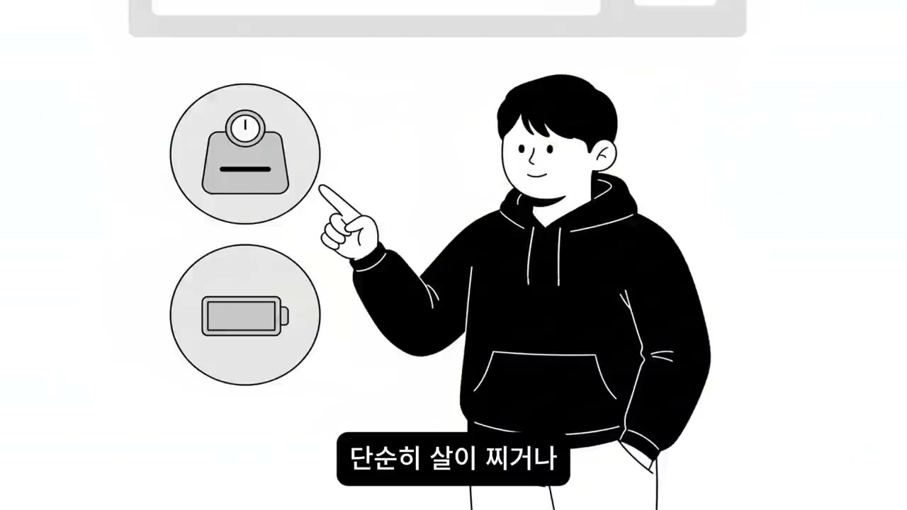
발화자는 “충격적 팩트”라며 워싱턴대학교 의대 연구팀 데이터를 소환한다. 하루 종일 앉거나 누워 있는 좌식생활자의 뇌 스캔에서 기억·학습 담당 내측 측두엽 두께가 현저히 얇아지는 패턴이 보였다고 주장한다.
중요한 전환은 “살이 찌거나 체력이 떨어지는 문제”를 넘어선다는 점이다. 신체 활동 정지 → 뇌 혈류 감소 → 물리적 위축 시작이라는 인과를 제시하며, “달콤한 휴식이라 믿는 순간 뇌세포는 서서히 질식한다”는 강한 표현으로 위기감을 고조시킨다. 화면의 체중계/배터리 아이콘은 체형 문제를 넘어 에너지 고갈 문제임을 시각화한다.
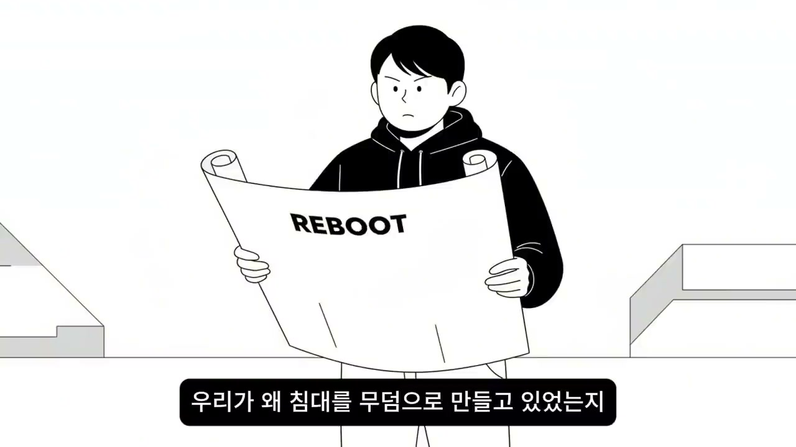
여기서 시청자 타깃을 명확히 좁힌다. “생각이 많고 내면 에너지가 깊은 INFP”, “완벽주의 때문에 머리가 뜨거운 분석마비 환자”를 직접 호명하며 영상을 긴급 구조 신호로 규정한다.
앞으로 약 15분간 다룰 내용은 두 가지다. 왜 침대를 무덤으로 만들었는지, 그리고 고장난 뇌 스위치를 어떻게 다시 켤지. “영상이 끝나면 침대가 더는 편안하지 않고, 박차고 나가고 싶은 충동을 느끼게 될 것”이라는 예언형 문장으로 기대를 설계한다. 화면의 REBOOT 설계도는 이후 매뉴얼형 전개를 예고한다.
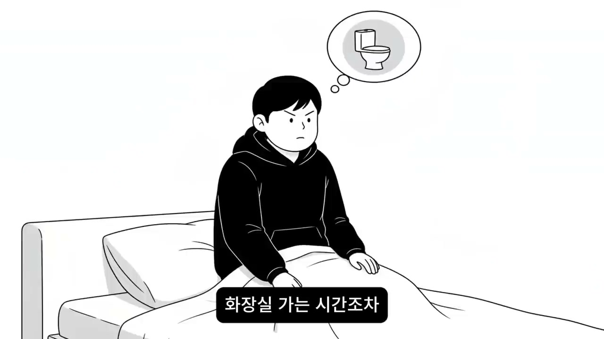
발화자는 본인도 “완벽한 배드로팅 중독자”였다고 고백한다. 금요일 저녁이 되면 물·간식·충전기·리모컨을 침대에 완비하고, 일요일 밤까지 현관 밖으로 한 발짝도 안 나갔다는 경험을 말한다.
겉보기에는 편안한 무기력 휴식 같지만, 내부는 정반대였다는 것이 핵심이다. 몸은 멈췄는데 뇌는 시속 200km로 공회전했고, 과거 말실수 반추와 다음 주 프로젝트 걱정이 계속 밀려왔다고 설명한다. 화면의 침대+화장실 생각풍선은 “필수 행동조차 귀찮은 고착”을 상징한다.
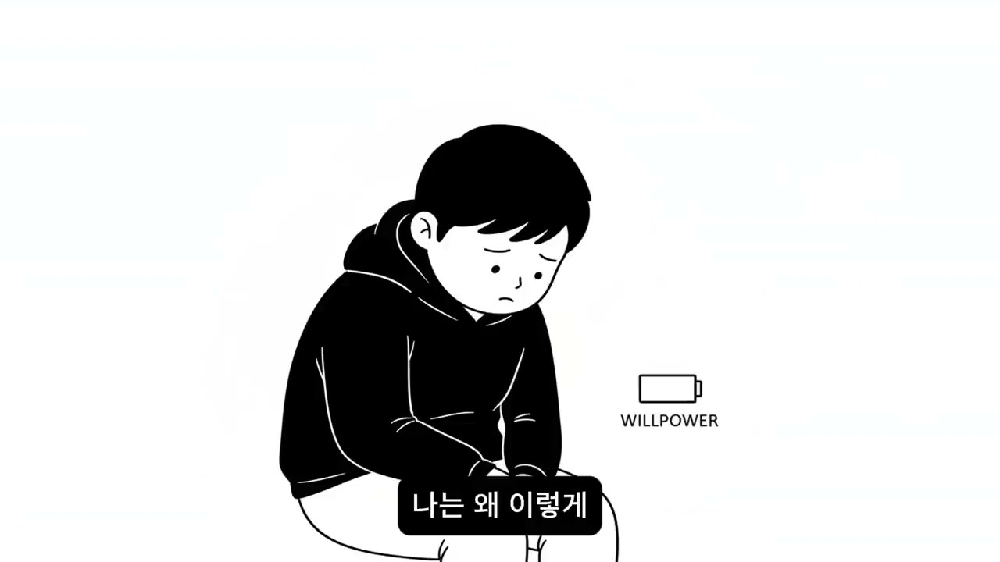
걱정은 단기 반추를 넘어 장기 생존 불안(“10년 뒤 뭘 먹고 살지”)으로 번진다. 주말 내내 누워 있었는데 월요일 아침엔 마라톤을 뛴 듯 전신통증이 왔다고 말하며, 비활동=회복이라는 믿음을 뒤집는다.
이 지점에서 자기비난 문장이 등장한다. “왜 나는 인스타 속 사람들처럼 갓생을 못 살까?”라는 비교/수치 루프다. 하지만 즉시 반전해 “이건 성격 문제도, 의지 문제도 아니다”라고 선언한다. 화면의 WILLPOWER 저전력 배터리는 의지력 담론의 한계를 시각적으로 강조한다.
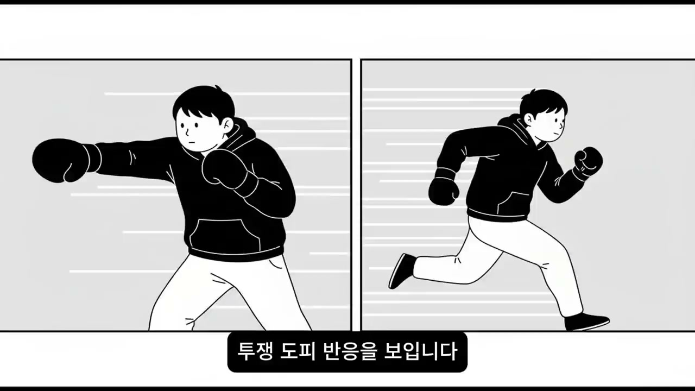
영상은 스트레스 반응을 3가지로 정리한다. 보통은 교감신경 활성 기반 투쟁/도피(fight/flight)가 작동하지만, 감당 불가능한 압박이 지속되면 뇌는 제3의 선택을 한다고 설명한다.
그 제3의 선택이 “얼어붙기(죽은 척하기)”이며, 전문용어로는 배측 미주신경 활성화 셧다운 상태라고 제시한다. 화면도 좌우 분할로 복싱/달리기 장면을 배치해 기존 2반응을 먼저 보여준 뒤, 다음 구간의 동결 반응 설명으로 넘어간다.
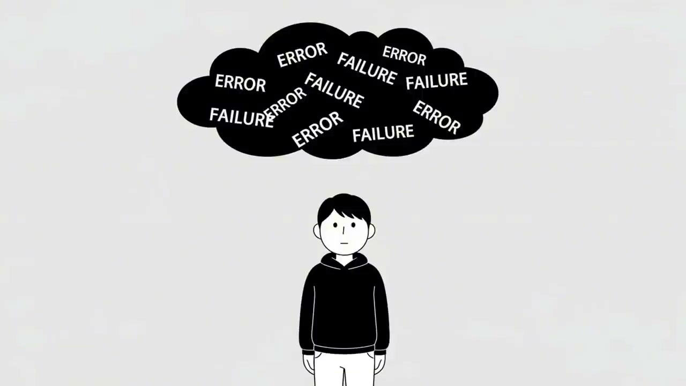
야생동물이 포식자 앞에서 가사 상태에 빠지는 원리와 인간의 배드로팅을 연결한다. 특히 INFP형의 강한 시뮬레이션 능력 때문에 시작 전부터 실패 가능성까지 전부 계산해 이미 다 겪은 것처럼 피로해진다고 주장한다.
결론은 “침대가 편해서 눕는 게 아니라, 현실 중력을 견딜 에너지가 고갈돼 쓰러진 것에 가깝다”이다. 화면의 ERROR/FAILURE 구름은 과도한 예측·재난 시나리오 사고를 단순명료하게 도식화한다.
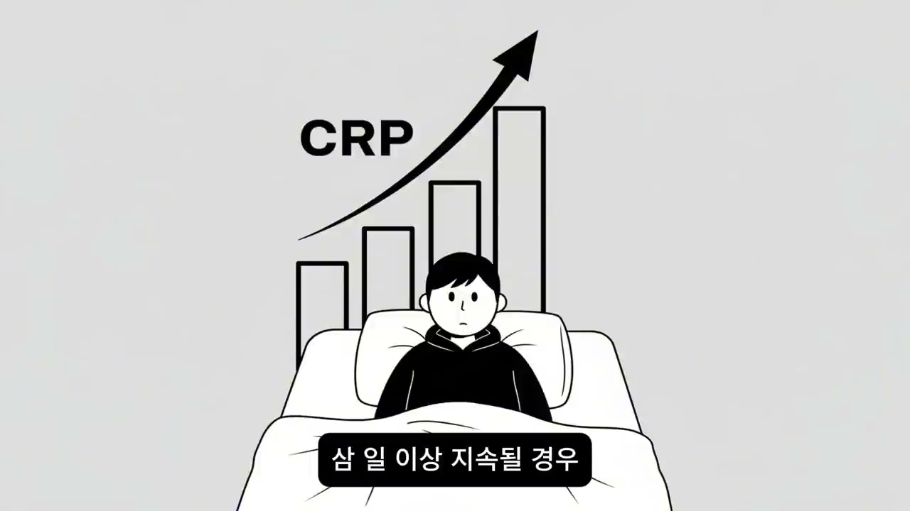
이제 도덕 판단을 생물학으로 치환한다. “당신은 게으른 게 아니라 방전됐다”는 문장으로 낙인을 걷어내고, 문제를 지속 시 발생하는 생리 변화로 전환한다.
2024년 정서장애 저널 대규모 연구를 언급하며, 3일 이상 누워만 있으면 염증수치(C-반응성 단백질, CRP)가 급증한다고 말한다. 이 염증물질이 뇌에 도달하면 도파민 분비를 억제하고, 그 결과 의욕·행복 회로가 꺼진다고 설명한다. 화면의 0% 배터리는 바로 이 단계의 상태 표현이다.
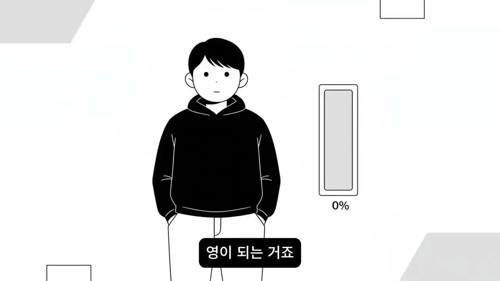
염증-도파민 억제 프레임을 체감 증상으로 연결한다. 오래 누워 있을수록 몸이 스스로를 환자로 인식해 에너지를 염증 대응에 소모하고, 의욕에 쓸 에너지가 ‘영(0)’이 된다는 것이다.
그래서 “10시간을 자도 개운하지 않고 오히려 더 피곤·우울하다”는 현상을 설명할 수 있다고 말한다. 이를 ‘힐링’으로 포장해 스스로를 병들게 했다고 진단하고, 다음 질문(“그럼 어떻게 탈출하나?”)으로 해결 파트에 진입한다. 화면의 CRP 상승 그래프가 논리를 시각적으로 받쳐 준다.
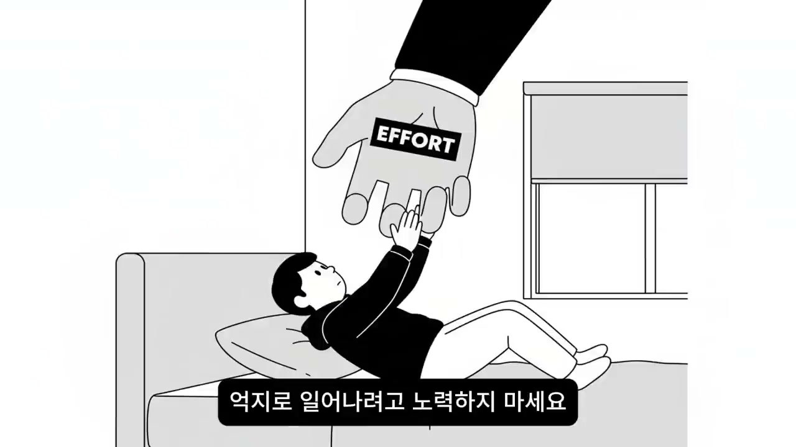
발화자는 흔한 조언(산책, 규칙생활, 햇볕)을 일부러 배제한다. 이미 수없이 들었고, 그게 됐으면 지금 이 영상이 필요 없었을 거라는 현실 인정을 먼저 한다.
핵심은 “억지로 일어나려 하지 말라”는 역설이다. 방전 상태에서 의지력으로 시동을 걸수록 더 깊은 무기력으로 밀려난다는 설명이며, dead battery 자동차에 계속 키를 돌려 엔진을 망가뜨리는 비유를 사용한다. 화면의 VERIFIED 문서와 군중은 이후 제시될 프로토콜에 권위를 부여하는 장치처럼 작동한다.
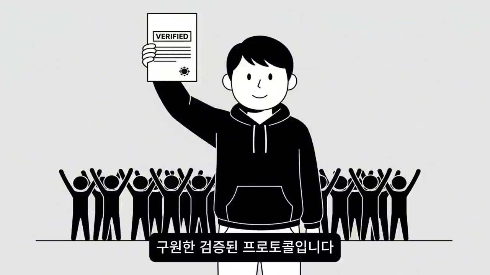
여기서 해결책의 이름이 나온다. “노력이 아니라 뇌 작동 모드를 수동 전환하는 해킹 코드”, 즉 4단계 신경계 재부팅 전략이다. 본인이 3일 배드로팅 지옥에서 탈출할 때 썼고, 분석마비 환자들에게도 검증됐다고 주장한다.
1단계는 감각 그라운딩이다. 배드로팅 상태의 뇌는 과거 흑역사나 미래 공포로 떠돌며 몸-정신 연결이 끊어진 해리 상태에 가깝다고 묘사한다. 화면의 EFFORT 손 장면은 “힘으로 당기지 말라”는 메시지와 연결된다.
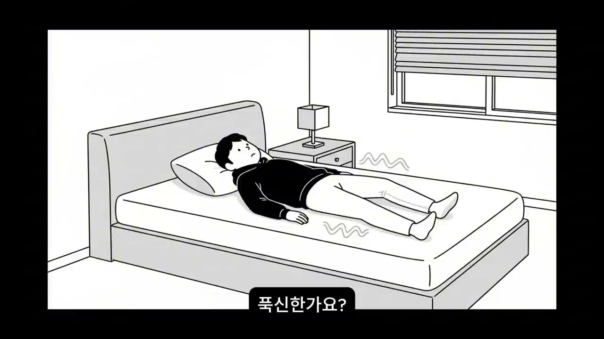
실행 지침은 구체적이다. 누운 채 발가락 끝 신경에 집중하고, 발가락을 힘껏 오므렸다 펴는 동작을 딱 3번 반복한다. 이어서 등 아래 매트리스 촉감, 이불 무게, 방 온도를 차례로 인식하라고 한다.
이 행동의 목적은 멍한 잡생각 회로를 끊는 것이라고 설명한다. 뇌의 기본모드네트워크(DMN)를 언급하며, 감각 주의 전환이 회로 전환의 물리 버튼 역할을 한다고 본다. 화면은 침대와 방 전체를 보여주며 실제 감각 체크 항목(침대, 이불, 공기)을 시각적으로 일치시킨다.
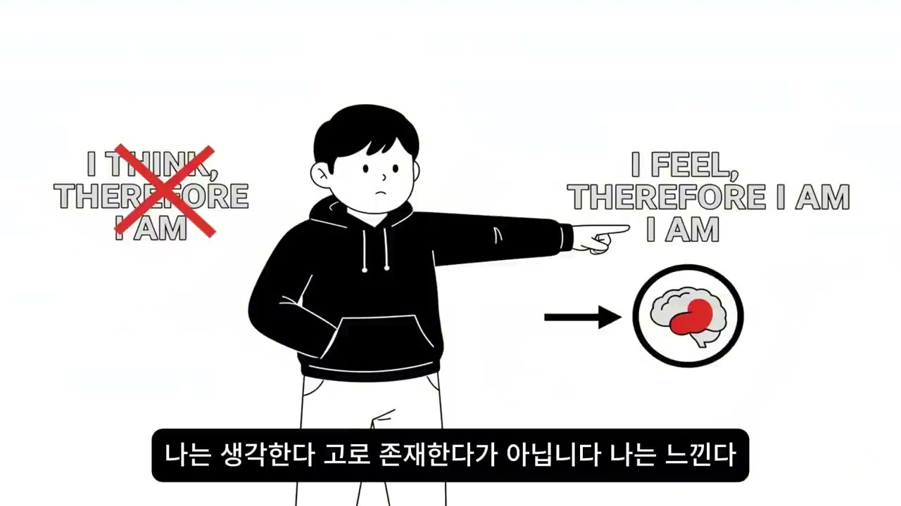
영상은 DMN과 집중 네트워크를 시소 관계로 설명한다. 한쪽이 올라가면 다른 쪽이 내려가므로, 감각 집중은 과열된 DMN 전원을 내리고 현재성 네트워크를 켠다는 논리다.
인상적인 문구는 “나는 생각한다, 고로 존재한다”가 아니라 “나는 느낀다, 고로 존재한다”다. 이렇게 모드를 바꿔야 전두엽으로 신선한 혈류가 다시 돌기 시작한다고 말한다. 이어 2단계로 도파민 디톡스가 아니라 도파민 스위칭을 제시한다. 화면도 좌측 문장을 X표로 지우고 우측 문장·뇌 아이콘을 강조한다.
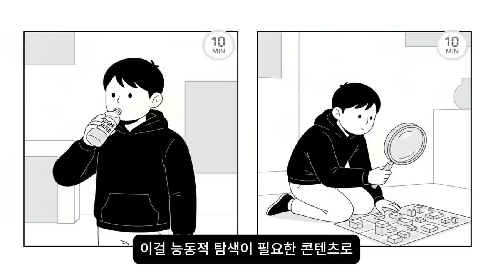
폰을 꺼버리면 정적 속 불안이 쓰나미처럼 밀려온다는 현실을 인정한다. 그래서 완전 차단 대신 콘텐츠 종류만 바꾸라고 제안한다.
15초 숏폼/자극적 가십은 뇌를 수동 수용 상태(설탕물 먹이기)로 만들기 때문에, 딱 10분 능동 탐색형 콘텐츠로 이동하라고 한다. 예시는 인테리어 소품 장바구니 담기, 가고 싶은 여행지 루트 지도 찍기다. 핵심은 “보는 것”에서 “고르는 것”으로 미세하게 행동을 바꾸는 것이다. 화면의 10분 표식 2패널(설탕물 vs 탐색)은 이 전환을 압축한다.
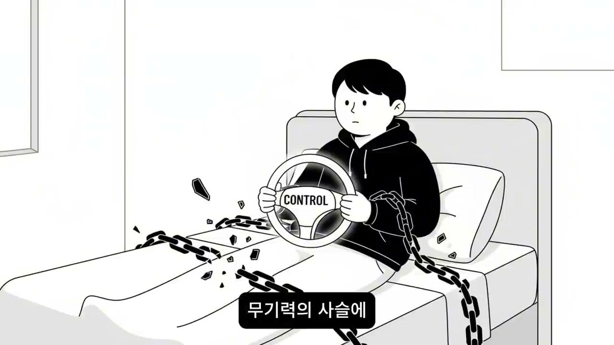
스탠퍼드의 앤드류 후버만 박사 연구를 인용해, 뇌는 보상을 소비할 때보다 무언가를 추구·선택할 때 도파민을 더 건강하게 분비한다고 설명한다. 즉 침대 위에 있어도 “내가 선택한다”는 신호만 주면 무기력 사슬에 금이 가기 시작한다는 주장이다.
그리고 3단계 핵심으로 상체 45도 법칙과 RAS(망상활성계) 자극을 제시한다. “이불 밖으로 나간다”는 거대 목표는 완벽주의자에게 과부하를 준다고 분석한다.
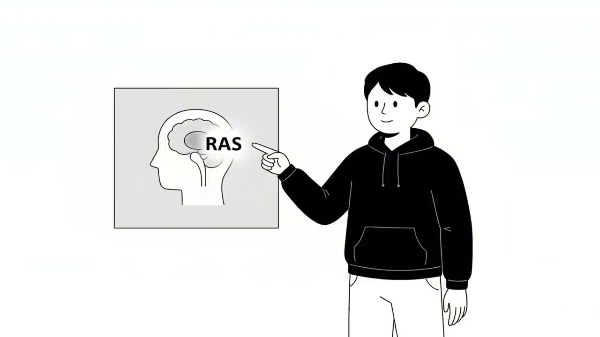
실행 문구는 매우 단순하다. “일어나지 않는다. 상체만 45도로 세우고 등 뒤에 베개 하나 더 받친다.” 목표를 극단적으로 낮춰 실패 확률을 줄이는 방식이다.
왜 45도냐는 질문에는 RAS 작동 논리로 답한다. 누우면 꺼지고 앉거나 서면 켜지는 각성 스위치가 RAS인데, 45도만 올려도 혈압/중력 패턴이 바뀌며 RAS가 자극돼 뇌가 ‘휴식 모드 종료’를 준비한다는 설명이다. 화면의 CONTROL 핸들과 끊어지는 사슬은 주도권 회복을 상징한다.
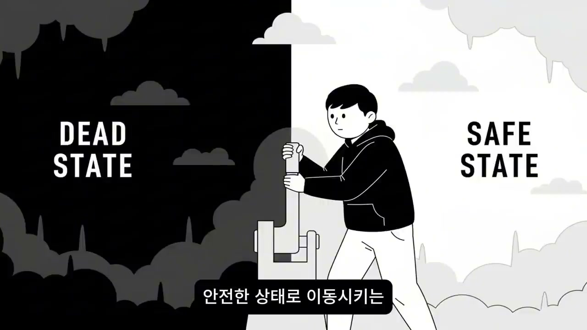
이 단계에서 가장 중요한 금지사항은 생산적 행동 시도 금지다. 책 읽기, 밀린 카톡 답장 같은 작업을 붙이면 뇌가 즉시 업무 모드 스트레스로 복귀한다고 본다.
권장 행동은 기대 앉은 채 창밖 멍때리기, 좋아하는 음악 한 곡 듣기 정도다. 작은 각도 변화가 죽은 상태에서 안전 상태로 옮기는 강력한 레버라는 주장이다. 이어 4단계 환경 넛지로 조명 켜기/커튼 조금 젖히기를 제안한다. 화면은 DEAD STATE와 SAFE STATE를 가르는 레버 장면으로 이를 명확히 표현한다.
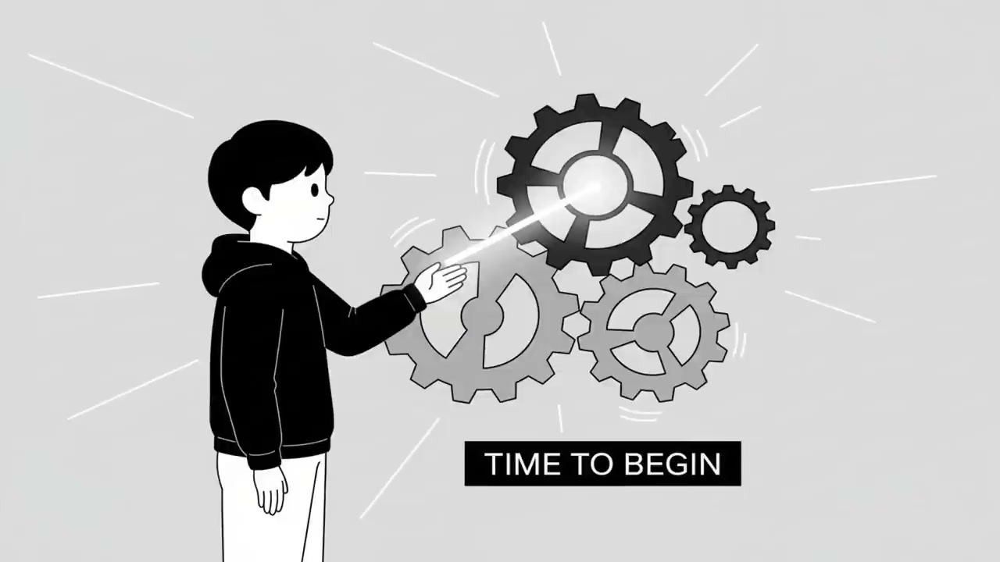
눈의 특정 광감지 세포가 빛을 받으면 멜라토닌 분비를 멈추고 세로토닌 생산을 유도한다는 설명을 준다. 방이 계속 어두우면 아무리 의지를 발휘해도 뇌는 “아직 밤”으로 오판한다는 논리다.
아주 작은 빛이라도 시각 자극이 들어가야 생체시계가 다시 돈다고 강조한다. 동시에 시청자 내적 반발(“그게 됐으면 내가 이러고 있겠냐”)을 직접 대변하고, 그것이 정상적 저항임을 인정한다. 화면의 5 SEC RULE 책 표지는 곧 이어질 강제 전환 기법을 예고한다.
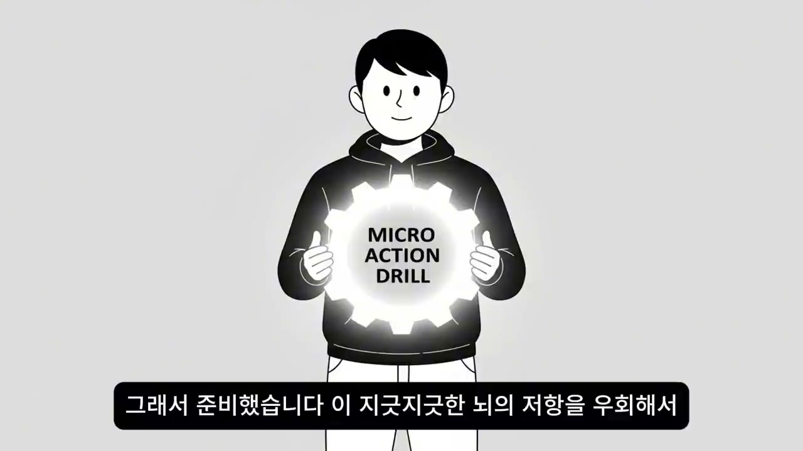
오랜 배드로팅 뇌는 아주 작은 움직임도 생존 위협으로 해석해 “가만히 있어, 에너지 아껴”라고 속삭인다고 설명한다. 그래서 정면돌파가 아니라 우회가 필요하다는 결론으로 이어진다.
여기서 IN 계열 맞춤형 마이크로 액션 드릴 개념이 등장한다. 노동요가 아니라 기상료를 틀라는 말로, 힘이 아닌 자동화된 기계적 트리거를 강조한다. 화면의 TIME TO BEGIN 기어는 “수동 시동” 이미지를 강화한다.
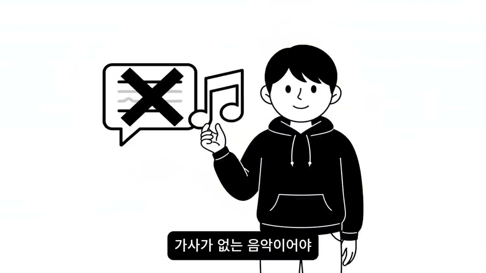
음악 조건은 세부적이다. 유튜브/스포티파이에서 마림바·업비트 재즈처럼 템포 빠른 가사 없는 곡을 선택하고, 평소보다 볼륨을 2단계 높인다.
가사가 있으면 언어중추가 자극돼 다시 잡생각·감상 루프로 빠질 수 있기 때문에 금지한다. 반대로 빠른 비트는 청각 경로를 통해 뇌간(각성 스위치)에 직접 타격을 준다고 설명한다. 화면도 말풍선(텍스트)을 X표 처리하고 음표 아이콘을 남겨 핵심 규칙을 직관화한다.
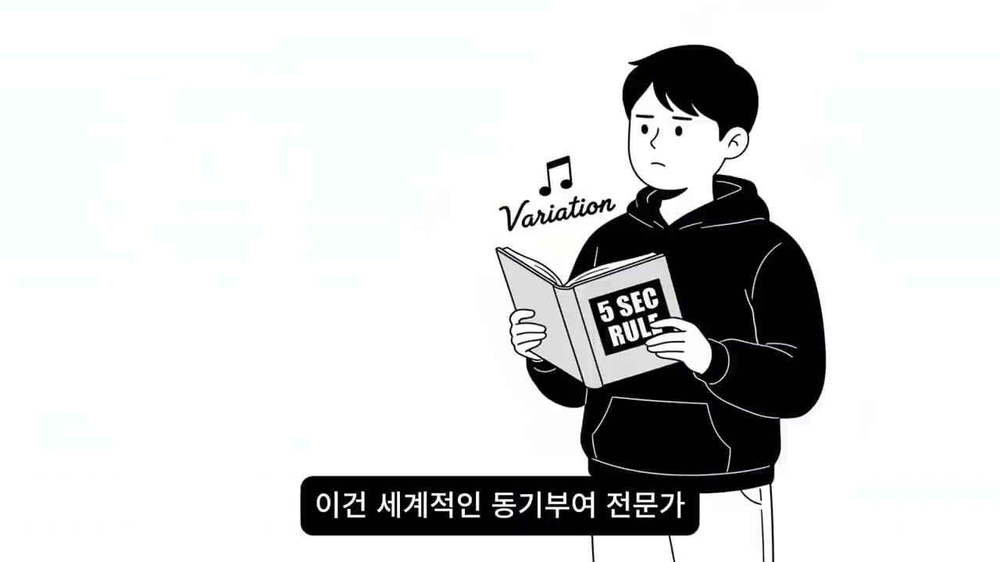
누운 채 손가락 박자만 맞춰도 성공이라는 저문턱 지시를 준다. “리듬이 뇌를 깨우는 첫 노크”라는 표현으로, 시작 허들을 극단적으로 낮춘다.
이어 멜 로빈스 5초 법칙을 응용해 5-4-3-2-1 발사를 소개한다. 단순 숫자 세기가 아닌 로켓 발사 시나리오를 덧입혀(“나는 발사대에 누운 우주비행사”) 과잉사고형에게 몰입형 트리거를 제공한다. 화면의 MICRO ACTION DRILL 기어는 이 전체 프로토콜의 브랜드화된 아이콘 역할을 한다.
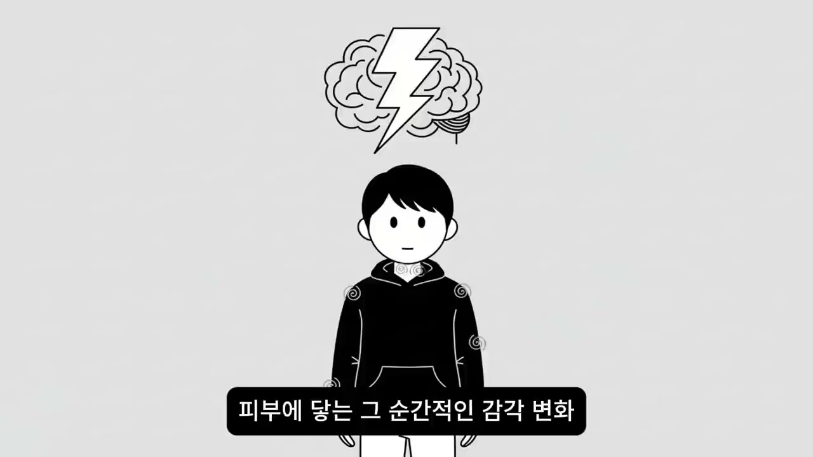
카운트다운 후 1에서 반드시 이불을 발로 걷어차라고 지시한다. 아직 일어나라는 게 아니라, 이불 제거만 하라는 단일 행동으로 과제를 최소화한다.
핵심 근거는 급작스러운 피부 촉각 변화다. 찬 공기가 닿는 순간의 감각 충격이 뇌 패턴을 끊고, 체온 유지를 위해 몸의 자동 반응을 유도한다고 설명한다. 즉 관성을 거슬러서가 아니라 관성을 역이용하는 방식이다. 화면의 번개/뇌 아이콘은 이 감각 쇼크를 상징한다.
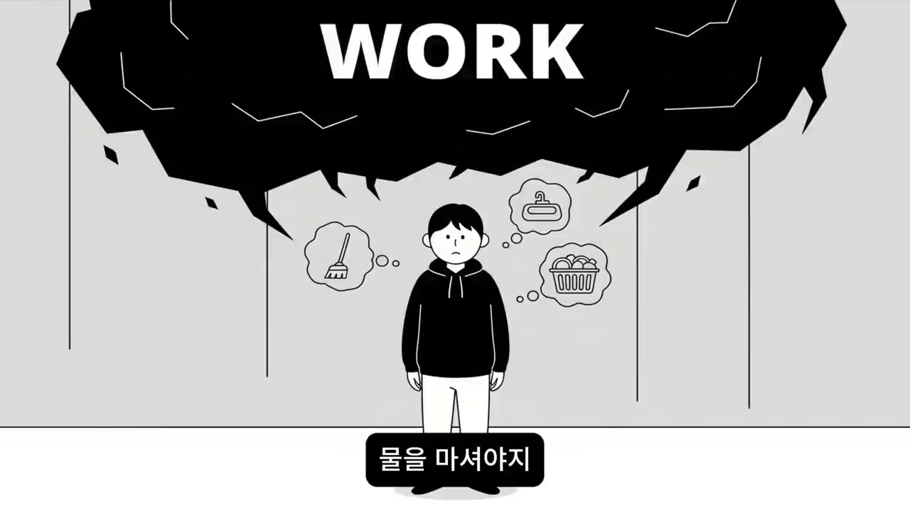
마지막 관문은 딱 1분, 좀비처럼 방안을 어슬렁거리기다. 화장실 가도 되고 냉장고 문 열어도 되지만, 어떤 목적도 붙이지 말라고 강하게 금지한다.
목적이 생기는 순간 뇌가 다시 “일”로 인식해 스트레스를 받기 때문이다. 아무 생각 없이 발을 질질 끄는 행동 자체가 하체 정맥 펌프를 돌려 산소를 뇌로 올리고, 결과적으로 “움직여도 별일 안 난다”는 학습을 만든다는 논리다. 화면의 PERFECT PLAN 두루마리는 이 철학의 반대편(과도한 계획)을 풍자한다.
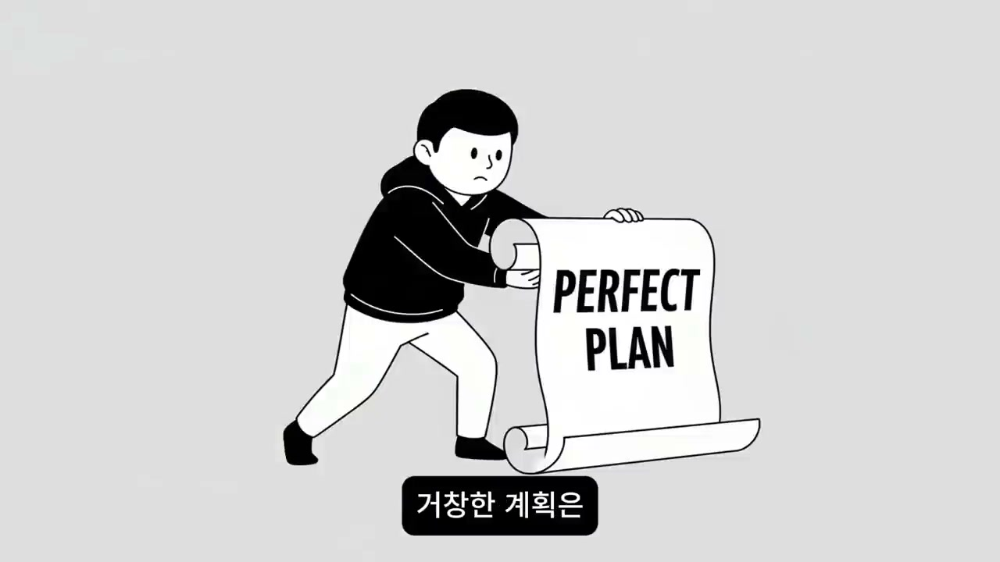
영상은 이 단계에서 재차 강조한다. 학습된 무기력을 깨는 것은 대단한 성취가 아니라 마이크로 다니(작은 단계) 승리의 누적이다. 그래서 오늘 목표는 침대 탈출이 아니라 “이불 한 번 걷어차 보기”만으로 충분하다고 한다.
“거창한 계획은 완벽주의자의 적”이라는 문장이 핵심 규칙으로 제시된다. 화면의 거대한 WORK 구름과 집안일 아이콘(빗자루, 빨래, 정리)은 목적이 붙는 즉시 부담이 폭증하는 메커니즘을 시각화한다.
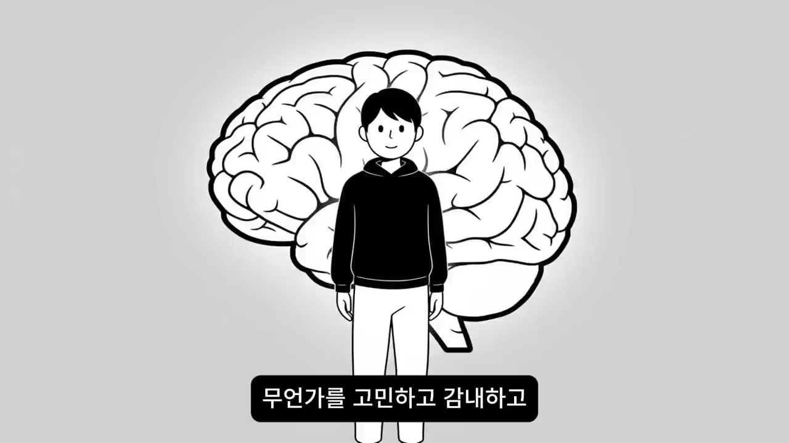
결말 파트는 정서 치유 중심이다. “나는 게으른 패배자”라는 자기비난 음성이 남아 있어도 자연스럽다고 인정한다.
그러나 오래 누워 있던 시간은 게으름의 증거가 아니라, 뇌가 치열하게 고민·감내해왔다는 증거일 수 있다고 재해석한다. 완벽하고 싶어서 시작이 두려웠고, 잘하고 싶어서 에너지를 아꼈다는 설명으로 수치심을 완화한다. “깊은 동굴은 도망처가 아니라 도약 전 인큐베이터”라는 비유가 핵심이다. 화면의 거대한 뇌 배경은 이 재프레이밍을 뒷받침한다.
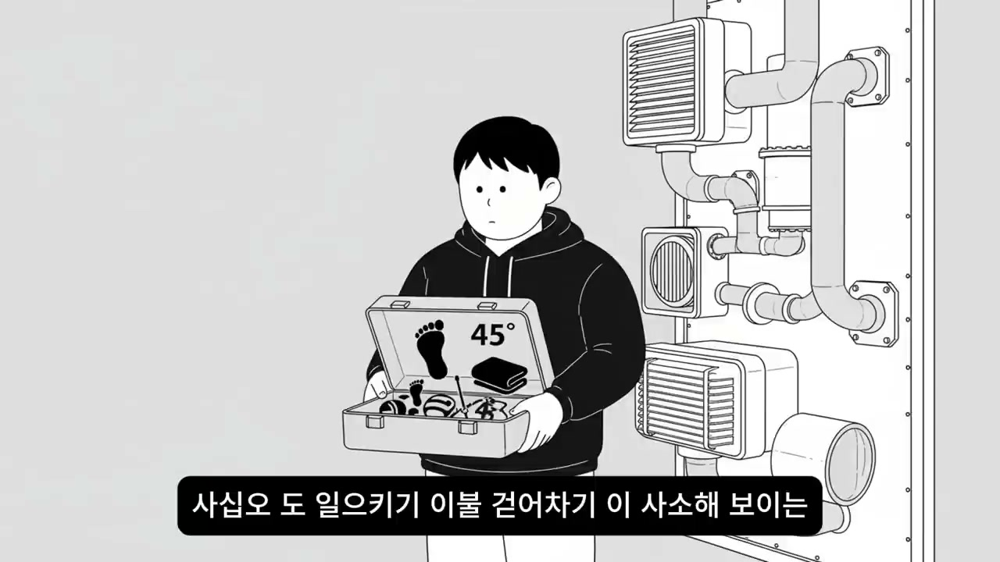
번데기-나비 비유로 “겉으론 멈춘 것 같아도 내부 변화는 진행 중”이라는 메시지를 준다. 다만 시간이 길어져 환기 시스템이 고장났을 뿐이며, 오늘 제시한 행동들은 그 환기 시스템을 고치는 정교한 도구라고 정의한다.
권장 자기대화는 명확하다. “내 뇌가 날 보호하려고 잠시 셧다운 버튼을 눌렀구나, 고맙다. 하지만 이제는 안전하니 다시 부팅하자.” 화면의 거대한 키보드와 말풍선(I KICKED THE BLANKET!)은 행동 선언을 ‘입력 명령’으로 형상화한다.
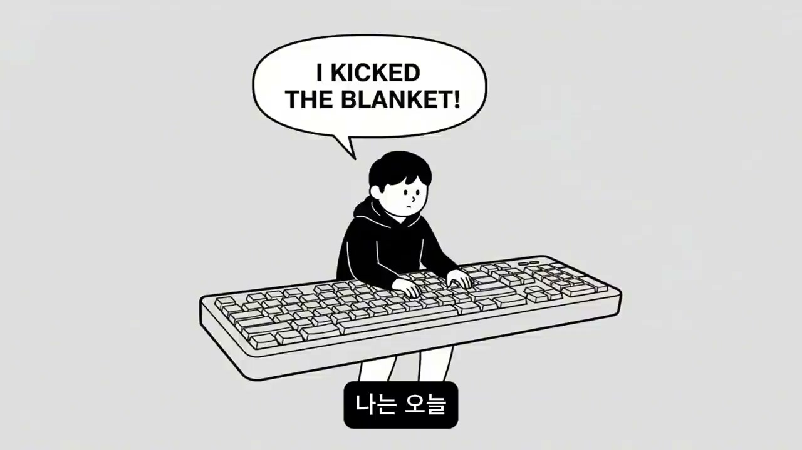
영상 끝까지 본 행위 자체를 변화의 첫 단추로 해석한다. 이제 시선만 거두지 않으면 침대는 무덤이 아니라 내일을 위한 충전소가 될 수 있다고 말한다.
즉시 행동 과제로 댓글 한 문장을 요청한다. “나는 오늘 이불을 걷어찼다.” 아직 못 했어도 괜찮고, 선언 자체가 뇌에 보내는 강력한 행동 명령어라고 설명한다. 타인 댓글을 보며 서로 러닝메이트가 되라는 사회적 책무 장치도 제시한다. 화면의 공구 상자(발가락, 45도, 이불 아이콘)와 파이프 구조는 “작동 매뉴얼+수리 시스템” 메타포를 완성한다.
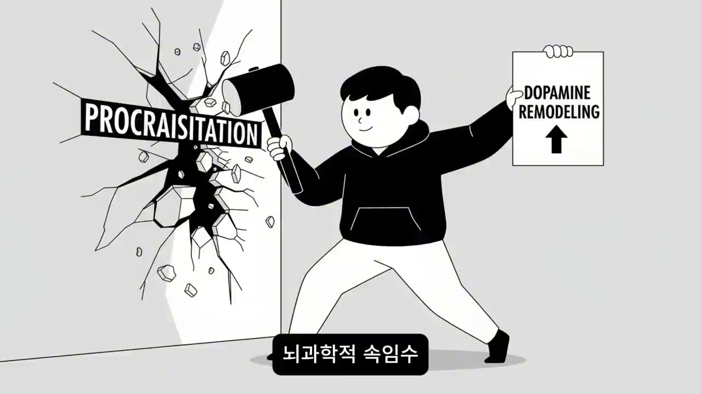
클로징은 채널 포지셔닝 문장으로 끝난다. “데이터로 증명하고 심리로 해결하는 성장 전략, 큐레이터 레디 포 그로스.”
다음 콘텐츠 예고는 “미루는 습관을 3분 만에 박살내는 뇌과학적 속임수, 도파민 리모델링 전략”이다. CTA는 이중 구조다: 오늘 내용이 강하게 꽂혔다면 구독, 아직 정신이 덜 차려졌다면 좋아요. 화면은 벽의 PROCRAISITATION(procrastination 변형 철자) 텍스트를 망치로 깨고 DOPAMINE REMODELING 표지를 드는 장면으로, 다음 에피소드의 전투적 톤을 시각적으로 고정한다.
“이건 휴식이 아닙니다. 뇌의 전두엽 기능이 정지되는 인지적 가사 상태에 가깝습니다.”
“당신이 치명적인 휴식을 취한다고 믿는 그 순간에 당신의 뇌세포는 서서히 질식해 가고 있었습니다.”
“이건 성격 문제가 아닙니다. 의지 문제도 아닙니다.”
“우리 뇌는 제3의 선택을 합니다. 바로 얼어붙기, 즉 죽은 척하기입니다.”
“침대가 편해서 누운 게 아니라 현실의 중력을 감당할 에너지가 고갈된 겁니다.”
“신체활동 없이 누워만 있는 행동이 3일 이상 지속되면 CRP가 급격히 올라갑니다.”
“일단 바깥으로 나가세요 같은 뻔한 잔소리는 하지 않겠습니다.”
“억지로 일어나려고 노력하지 마세요.”
“지금 필요한 건 노력 아니라 뇌의 작동 모드를 수동 전환하는 해킹 코드입니다.”
“나는 생각한다 고로 존재한다가 아니라, 나는 느낀다 고로 존재한다로 바꿔야 합니다.”
“도파민 디톡스가 아니라 도파민 스위칭입니다.”
“핵심은 보는 것에서 고르는 것으로 행동을 미세하게 바꾸는 겁니다.”
“상체를 45도만 일으켜도 RAS가 자극을 받습니다.”
“절대 생산적인 일을 하려 하지 마세요.”
“아주 작은 빛이라도 좋습니다. 시각 자극을 줘야 뇌의 생체시계가 다시 돌아갑니다.”
“5, 4, 3, 2, 1… 1에서 무조건 이불을 발로 걷어차세요.”
“거창한 계획은 완벽주의자의 적입니다.”
“당신의 깊은 동굴은 도망치기 위한 곳이 아니라, 더 높이 비상하기 위해 날개를 정비하던 인큐베이터였을지도 모릅니다.”
“나는 오늘 이불을 걷어찼다.”
이 영상의 본질은 도덕적 훈계가 아니라 상태 전환 설계다. 배드로팅을 게으름으로 몰아붙이지 않고, 염증-도파민-주의네트워크-각성계(RAS)-환경자극의 연결로 설명해 “나를 탓하는 문제”를 “재부팅할 시스템 문제”로 바꾼다.
실용적으로는 세 가지가 핵심이다. 첫째, 목표를 극단적으로 낮춰 첫 동작을 만든다(발가락 3회, 45도, 이불 차기). 둘째, 차단보다 전환을 쓴다(콘텐츠 10분 스위칭, 가사 없는 빠른 음악). 셋째, 목적 없는 짧은 움직임으로 뇌의 위협 해석을 낮춘다(1분 배회).
향후 전망으로는 채널이 제시한 “도파민 리모델링” 시리즈형 접근이 반복될 가능성이 높다. 즉 단발 동기부여보다 행동 설계 템플릿을 제공하는 포맷으로 확장될 수 있으며, 이번 영상은 그 첫 모듈(무기력 탈출용 부팅 시퀀스)로 기능한다.
댓글
GitHub 이슈 기반 댓글 시스템입니다.